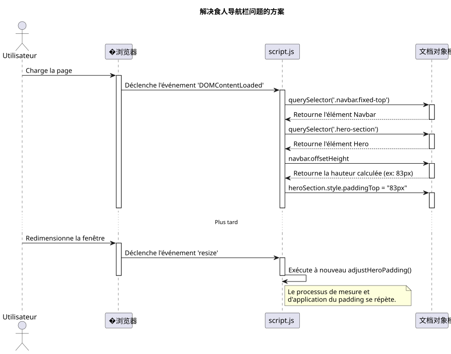
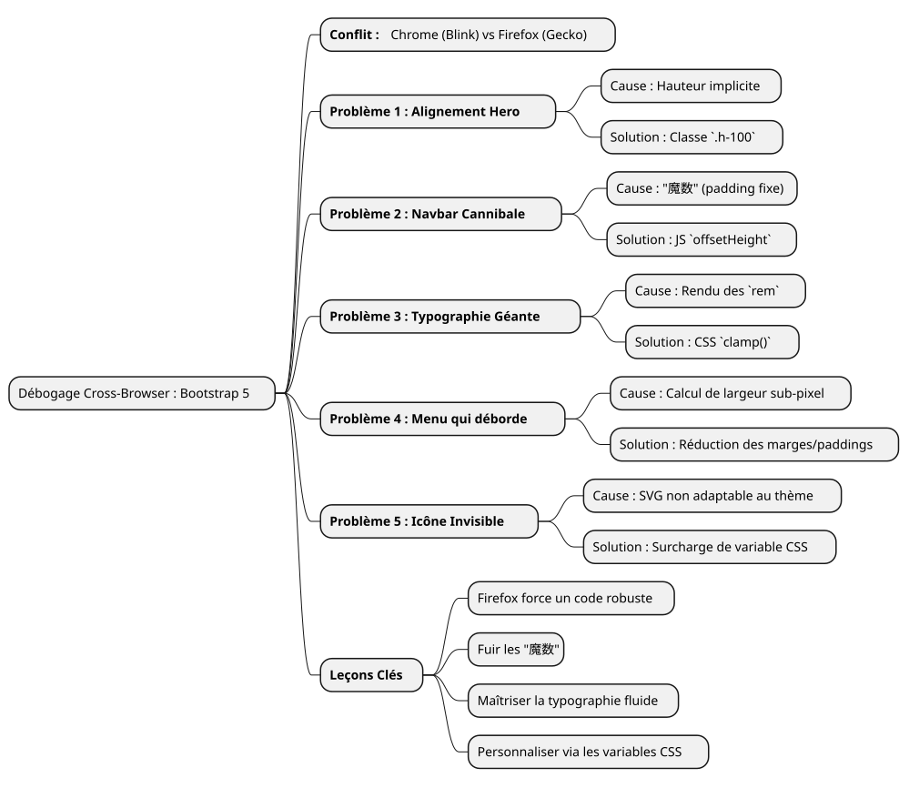

调试故事：用Bootstrap 5驯服Firefox的脾气
Publié le 14 July 2025
|
阅读时间：*大约 7 分钟 *Niveau : 中等 |
在这个详细案例研究中，我们将分析在使用 Bootstrap 5.2 创建 UI 设计稿时遇到的最常见且有时最令人沮丧的浏览器兼容性问题。从 Flexbox 的管理到字体渲染的细微差别，探索我们的调试过程，以将 Firefox 下出错的布局转变为在所有浏览器上都能实现像素完美的体验。
战场：一个模型，三个浏览器，多种渲染
每位前端开发者都有这种感觉。经过数小时的工作，稿子终于完美了。对齐清晰，排版优雅，动画流畅。我们松了一口气，满意地欣赏自己在 Chrome（或 Brave、或 Edge）上的作品，随后出于职责，打开项目在 Firefox 上查看。这时候，灾难就来了。元素溢出，对齐被破坏，字体大小混乱……美好的和谐瞬间消失。
这是我们在开发新的作品集界面时面临的确切场景。需求很简单：一个现代、响应式的主页，带有主题选择器（亮色、暗色和高对比度），使用 vanilla JavaScript 和 Bootstrap 5.2 的最新版本。
这篇文章不是灵丹妙药解决方案的清单。它是我们调试会话的日志，深入探讨了Blink引擎（Chromium、Brave）和Gecko引擎（Firefox）之间渲染差异的“为什么”，并表明稳健而现代的解决方案总比仓促的补丁更好。
组件图：前端解决方案架构
问题1：'Hero’部分的飞行卡
第一个错误也是最明显的错误。首页（“hero”）部分由两列组成：左侧是主标题；右侧是介绍卡片。
-
症状 :在 Chrome 和 Brave 中，两列完全垂直居中。在 Firefox 中，右侧卡片莫名其妙地掉到了左侧文本下方。
-
调查：HTML 代码看起来却很简单且正确，使用了 Bootstrap 的标准类。
<section id="home" class="hero-section">
<div class="container">
<!-- Cette ligne est la clé du problème -->
<div class="row align-items-center min-vh-100">
<div class="col-lg-6">
<!-- Contenu de gauche -->
</div>
<div class="col-lg-6">
<!-- Carte de droite -->
</div>
</div>
</div>
</section>我们的自定义CSS为`.hero-section`定义`display: flex` et align-items: center, 以及该班级`min-vh-100`它确实为该行提供了最小的高度`div.row`). 那么，为什么 Firefox 拒绝居中这些列？
-
根本原因：这是一个关于渲染引擎如何解释隐式高度的教科书案例。La`<section>`有一个`min-height`,但是没有`height`显式。为了应用`align-items-center`在…内部`div.row`, Firefox 需要知道此容器的参考高度。就像它的父元素 (
div.containeret la `<section>`她自己)没有高度严格的, Firefox 迷失了。 Blink 引擎更宽松，能够“猜测”意图并将元素居中。 Gecko 更忠实于规范，则不会这样做。 -
解决方案：将高度显式化。我们已经强制了`.container` et le `.row`占用其父容器100%的高度，使用该实用类`h-100`的Bootstrap。
<section id="home" class="hero-section">
<div class="container h-100">
<div class="row align-items-center min-vh-100 h-100">
<!-- ... -->
</div>
</div>
</section>|
当一个`align-items`如果 Flexbox 在垂直轴上未按预期工作，请始终检查容器是否有高度`height` ou |
问题 2：食人导航栏
-
�症状： Le `padding`在 Chrome 上已经足够，但在 Firefox 上却不够，标题仍然被部分遮挡。
-
根本原因 :使用一个"魔数`80px`) 是一种非常糟糕的做法。像导航栏这样的元素的高度可能会因浏览器之间的细微差异（如字体渲染、间距或甚至用户设置）而相差几个像素。依赖固定值是脆弱设计的根源。
-
解决方案：一个动态且无懈可击的 JavaScript 解决方案。我们编写了一个小脚本用于：
-
�测量导航栏在页面渲染后的*实际*高度。
-
应用此测量高度作为`padding-top`到“Hero”部分。
-
每次窗口尺寸变化时重新执行此函数，以适应变化（如切换到汉堡菜单）。
document.addEventListener('DOMContentLoaded', function() {
function adjustHeroPadding() {
const navbar = document.querySelector('.navbar.fixed-top');
const heroSection = document.querySelector('.hero-section');
if (navbar && heroSection) {
const navbarHeight = navbar.offsetHeight;
heroSection.style.paddingTop = navbarHeight + 'px';
}
}
// Ajuster au chargement et au redimensionnement
adjustHeroPadding();
window.addEventListener('resize', adjustHeroPadding);
});
与此同时，我们当然删除了该规则`padding-top: 80px;`我们的文件`styles.css`。
问题3：排版混乱
接下来的问题是对品牌形象最不利的：主标题的大小。
-
�症状：在Firefox上，标题“Développeur Formateur…”的字体巨大，几乎令人震惊，而它在其他浏览器上却很和谐。
-
根本原因：标题使用了一个类`display-4`Bootstrap。这些类使用响应式字体大小，通常基于单位`rem`媒体查询。再次，Firefox的渲染算法结合了“Inter”字体，导致在我们的1920x1080分辨率下出现了远大于预期的尺寸计算。
-
解决方案：使用 CSS 函数重新获得控制`clamp()
. 此功能是流畅排版的革命。它允许使用三个值定义字体大小：一个最小值，一个“首选”值（会随视图宽度自适应”，`vw），以及最大尺寸。
.hero-content h1 {
color: var(--text-primary);
line-height: 1.2;
/*
Min: 2rem
Préférée: s'adapte à la vue
Max: 2.5rem (40px)
*/
font-size: clamp(2rem, 1.2rem + 1.5vw, 2.5rem);
}与`clamp(), 我们可以告诉浏览器 : "让字体随着屏幕增大，不要超过从不的限制`2.5rem. 这使得所有浏览器的渲染瞬间统一，让我们对最终的美学拥有完全控制。
问题4：导航栏溢出
-
�症状：在1920×1080的屏幕上，菜单中的最后几个链接（“Blog”、“Contact”）被推到了屏幕右侧外，但仅在Firefox中出现。
-
根本原因：在多次尝试失败后（更改Bootstrap的断点`lg` à
xl`然后`xxl),我们已经明白了。原因不是Bootstrap的逻辑，而是一个简单的宽度计算。在Firefox上，所有链接宽度的总和，包括它们的`padding` et `margin`以亚像素精度，légèrement 超过 1920 像素。在 Chrome 上，同样的总和 légèrement 不足。我们缺少了几个像素。 -
解决方案：手术般的间距缩减。由于不可能使用过时的 CSS hack 专门针对 Firefox，唯一整洁的解决方案是找到一种在所有地方都通用的样式。因此，我们稍微减小了每个导航链接的水平外边距和内边距。
/* La version finale, légèrement plus compacte */
.navbar-nav .nav-link {
font-size: 0.9rem; /* 90% de la taille de base */
color: var(--text-primary) !important;
font-weight: 500;
margin: 0 0.2rem;
padding: 0.5rem 0.5rem !important;
border-radius: 0.375rem;
transition: all 0.3s ease;
}这种减少在单个元素上几乎肉眼不可见，却让我们在整体上获得了足够的空间，使所有链接能够放入 Firefox 的框架内，同时在其他浏览器上保持几乎相同的外观。
问题 5：不可见的汉堡菜单
-
�症状：在响应式模式（汉堡菜单），菜单图标在 "dark" 和 "high-contrast" 主题下不可见。
-
根本原因：Bootstrap 5的菜单图标是一个`background-image`(一个URL编码的SVG)。默认情况下，其描边颜色为深色，已针对浅色背景进行了优化。它不会自动适应主题的更改。
-
解决方案：使用 Bootstrap 的 CSS 变量来覆盖图标。我们已经定义了一个新的 SVG 图标，但这次使用了白色描边。
#ffffff`并且我们在主题时具体应用了它`darkou `high-contrast`活跃的
/* ======================
Fix pour l'icône du menu Burger (Blanc)
====================== */
[data-bs-theme="dark"] .navbar-toggler-icon,
[data-bs-theme="high-contrast"] .navbar-toggler-icon {
--bs-navbar-toggler-icon-bg: url("data:image/svg+xml,%3csvg xmlns='http://www.w3.org/2000/svg' viewBox='0 0 30 30'%3e%3cpath stroke='%23ffffff' stroke-linecap='round' stroke-miterlimit='10' stroke-width='2' d='M4 7h22M4 15h22M4 23h22'/%3e%3c/svg%3e");
}|
像这样的Bootstrap组件的自定义通过覆盖CSS变量的方式变得越来越常见 ( |
结论：艰苦调试的教训
虽然这条道路有时令人沮丧，但它充满了教训。每解决一个问题，都会强化网页开发的一条基本真理：没有什么能取代严格的跨浏览器测试。.

以下是我们记住的教训：
-
Firefox 是一个盟友：它对CSS标准的更高忠诚度迫使我们编写出更健壮且歧义更少的代码。
-
请远离"魔法数字" :固定值（如`padding-top: 80px`) 是定时炸弹。始终优先考虑动态解决方案(JavaScript)或相对布局(Flexbox, Grid)。
-
�掌握您的排版：使用`clamp()`用于完全控制响应式字体的大小。
-
想以 "组件" :要自定义 Bootstrap，请覆盖其 CSS 变量，而不是增加覆盖框架的规则。
-
不要面向特定的浏览器：解决方案几乎从不在于为特定浏览器进行 "hack" ，而在于找到一种在各处都能通用的样式。
最终，原型现在坚固、可预测，并且准备好被集成到一个模板系统中。每个被修复的错误不是失败，而是迈向更高质量代码的一步。